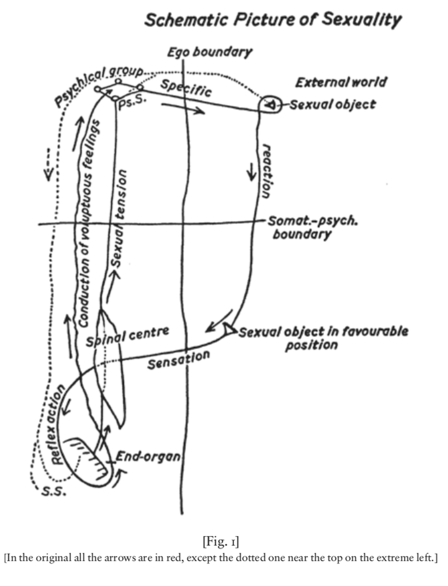
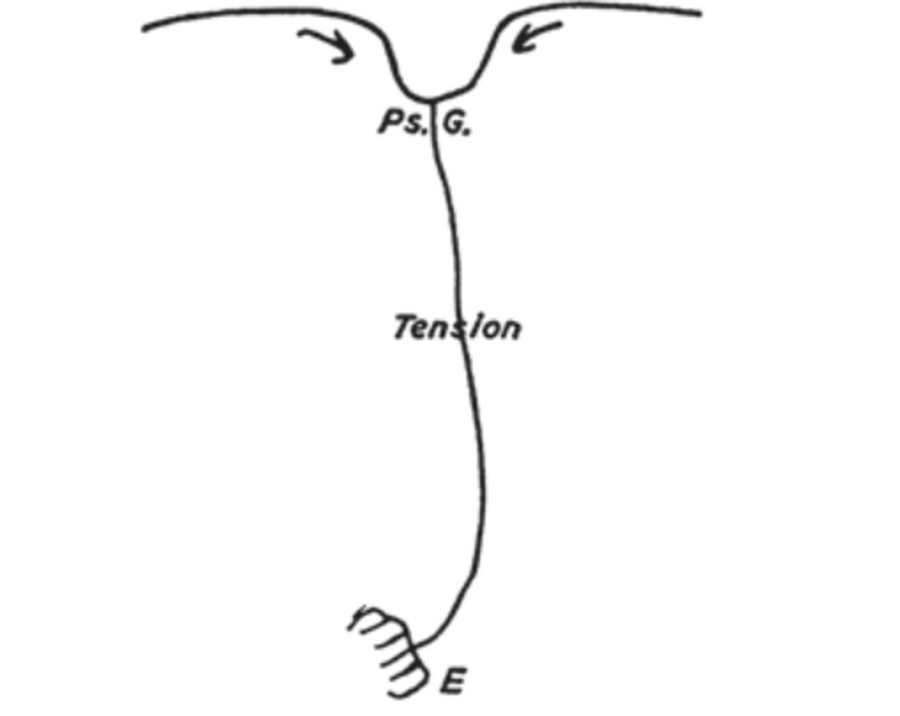
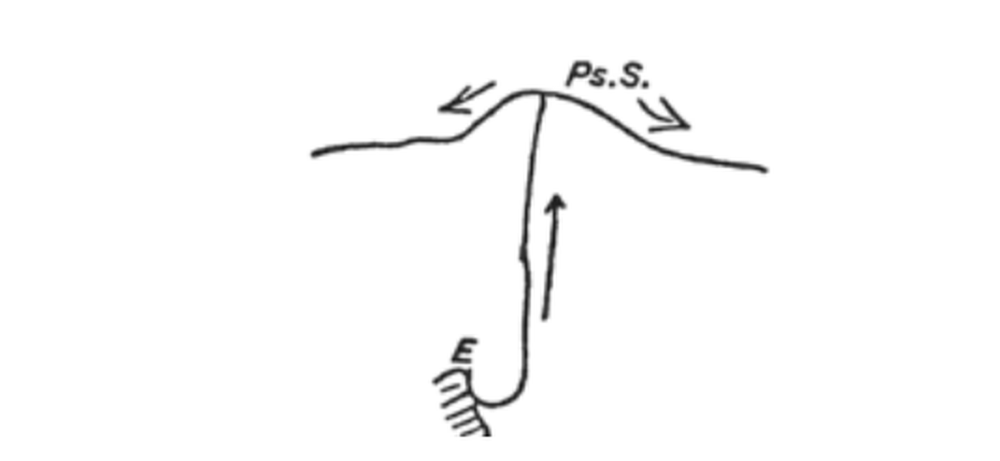

Draft G. Melancholia. (Undated. ? January 7, 1895)
DRAFT G¹ · MELANCHOLIA²
I
The facts before us seem to be as follows:
摆在我们面前的事实似乎如下：
(A) There are striking connections between melancholia and [sexual] anaesthesia. This is borne out (1) by the finding that with many melancholics there has been a long previous history of anaesthesia, (2) by the discovery that everything that provokes anaesthesia encourages the generation of melancholia, (3) by the existence of a type of woman, very demanding psychically, in whom longing easily changes over into melancholia and who is anaesthetic.
（A）忧郁症[melancholia] 与〔性的〕无感[anaesthesia] 之间有着显著的关联。这一点由以下情形所证实：（1）在许多忧郁症患者身上，此前有长久的无感史；（2）人们发现，凡是引起无感的一切，都会助长忧郁症的发生；（3）存在这样一类女子——在心灵上极为苛求，其渴慕[longing] 极易转变为忧郁症，而她本人恰恰是无感的。
(B) Melancholia is generated as an intensification of neurasthenia through masturbation.
（B）忧郁症是经由手淫、作为神经衰弱[neurasthenia] 的强化而产生的。
(C) Melancholia appears in typical combination with severe anxiety.
（C）忧郁症典型地与严重焦虑[severe anxiety] 合并出现。
(D) The type and extreme form³ of melancholia seems to be the periodic or cyclical hereditary form.
（D）忧郁症的典型形式与极端形式³，似为周期性或循环性的遗传形式。
II
In order to make anything of this material, we need some fixed points of departure. These seem to be provided by the following considerations:
要从这些材料中做出任何东西，我们需要一些固定的出发点。以下这些考虑似乎可以提供它们：
(a) The affect corresponding to melancholia is that of mourning – that is, longing for something lost. Thus in melancholia it must be a question of a loss⁴ – a loss in the life of the drives [Triebleben].
（a）与忧郁症相对应的情感是哀恸[mourning]——亦即对某件失去之物的渴慕。因此，在忧郁症中，问题必定关乎一种丧失⁴——驱力生活[Triebleben]ᵀ 中的一种丧失。
(b) The nutritional neurosis parallel to melancholia is anorexia. The famous anorexia nervosa of young girls seems to me (on careful observation) to be a melancholia where sexuality is undeveloped. The patient asserted that she had not eaten, simply because she had no appetite, and for no other reason. Loss of appetite – in sexual terms, loss of libido.
（b）与忧郁症平行的营养性神经症[nutritional neurosis] 是厌食[anorexia]。少女身上著名的神经性厌食[anorexia nervosa]，在我看来（经仔细观察）是一种性欲尚未发展的忧郁症。病人断言她不曾进食，只因为她没有胃口，别无其他缘故。食欲的丧失——用性的语言说，就是力比多的丧失。
It would not be far wrong, therefore, to start from the idea that melancholia consists in mourning over loss of libido.
因此，若从这样一个观念出发——忧郁症在于对力比多之丧失的哀恸——离真相并不算远。
III
I shall now discuss, on the basis of the schematic diagram of sexuality [Fig. 1], which I have often used,¹ the conditions under which the psychical sexual group (ps. S.)² suffers a loss in the amount of its excitation [Erregungsgröße]. Here there are two possible cases: (1) if the production of s. S. (somatic sexual excitation) sinks or ceases, and (2) if the sexual tension is diverted from the ps. S. [psychical sexual group]. The first case, in which the production of s. S. [somatic sexual excitation] ceases, is probably what is characteristic of genuine severe melancholia proper which recurs periodically, or of cyclical melancholia, in which periods of increase and cessation of production alternate. Further, we can assume that excessive masturbation, which according to our theory leads to excessive unloading of E. (the end-organ) and thus to a low level of stimulus in E. – excessive masturbation goes on to affect the production of s. S. [somatic sexual excitation] and to bring about a lasting reduction in s. S., consequently to a weakening of the ps. S. [psychical sexual group]. This is neurasthenic melancholia. The [second] case, in which sexual tension is diverted from the p. S. [psychical sexual group], while the production of s. S. [somatic sexual excitation] is not diminished, presupposes that the s. S. [somatic sexual excitation] is employed elsewhere – at the boundary [between the somatic and the psychical]. This, however, is the determinant of anxiety; and accordingly this coincides with the case of anxious melancholia, a mixed form combining anxiety neurosis and melancholia.
我现在要依据性的示意图〔图 1〕——我常常使用此图¹——讨论心理性欲组[psychical sexual group]（ps. S.）² 在其兴奋量[Erregungsgröße]ᵀ 上遭受损失的条件。这里有两种可能的情形：（1）s. S.（躯体性兴奋[somatic sexual excitation]）的产生下沉或停止；（2）性的紧张[sexual tension] 从 ps. S.〔心理性欲组〕被引开。第一种情形，即 s. S.〔躯体性兴奋〕的产生停止，大概正是周期性复发的真正的严重忧郁症、或循环性忧郁症的特征——在后者中，产生增多与产生停止的时期交替出现。此外，我们可以假定：过度手淫，按我们的理论会导致内器官[end-organ]（E.）的过度卸载，从而使 E. 中的刺激水平偏低——过度手淫还会进而影响 s. S.〔躯体性兴奋〕的产生，造成 s. S. 的持久减少，因而使 ps. S.〔心理性欲组〕变弱。这就是神经衰弱性忧郁症[neurasthenic melancholia]。〔第二种〕情形，即性的紧张从 p. S.〔心理性欲组〕被引开、而 s. S.〔躯体性兴奋〕的产生并未减少，其前提是 s. S.〔躯体性兴奋〕被用在别处——在〔躯体与心理之间的〕边界上。然而这正是焦虑的决定因素；因此它与焦虑性忧郁症[anxious melancholia] 的情形相合，那是一种焦虑神经症与忧郁症混合的形式。

In this discussion, therefore, the three forms of melancholia, which must in fact be distinguished, are explained.
因此，在这一讨论中，事实上必须加以区分的三种忧郁症形式都得到了说明。
IV
How does it come about that anaesthesia plays this part in melancholia?
无感为何在忧郁症中起这样的作用？
According to the schematic diagram [Fig. 1], there are the following kinds of anaesthesia.
依示意图〔图 1〕，无感有以下几种。
Anaesthesia always consists, to be sure, in the omission of V. (the voluptuous feeling) which ought to be conducted into the ps. S. [psychical sexual group] after the reflex action which unloads [entlastet] the end-organ. The voluptuous feeling is measured by the amount of unloading.
诚然，无感总在于 V.（快感[voluptuous feeling]）的缺失——这快感本应在使内器官卸载[entlastet]ᵀ 的反射动作之后被传导进 ps. S.〔心理性欲组〕。快感的大小，以卸载的量来衡量。
(a) The E. [end-organ] is not sufficiently loaded; hence the unloading at coitus is slight and the V. [voluptuous feeling] very small: the case of frigidity.
（a）E.〔内器官〕负荷不足；故性交时的卸载轻微，V.〔快感〕极小：即性冷感[frigidity] 的情形。
(b) The pathway from sensation to the reflex action is damaged, so that the action is not sufficiently strong. If so, the unloading and the V. are also slight: the case of masturbatory anaesthesia, the anaesthesia of coitus interruptus, etc.
（b）从感觉到反射动作的通路受损，以致该动作不够强。若如此，卸载与 V. 也轻微：即手淫性无感、性交中断[coitus interruptus] 之无感等情形。
(c) Everything below is in order; only V. is not admitted to the ps. G. [psychical sexual group] owing to being linked in another direction (with disgust – defence): this is hysterical anaesthesia, which is entirely analogous to hysterical anorexia (disgust).
（c）下面的一切都正常；只是 V. 因与另一方向相联系（与嫌恶[disgust]——防御）而不被接纳进 ps. G.〔心理性欲组〕：这就是癔症性无感，与癔症性厌食（嫌恶）完全类似。
To what extent, then, does anaesthesia encourage melancholia?
那么，无感在何种程度上助长忧郁症？
In case (a), of frigidity, anaesthesia is not the cause of melancholia but a sign of a disposition to it. This tallies with Fact A(1) mentioned at the beginning [p. 228 above]. In other cases the anaesthesia is the cause of the melancholia, since the ps. G. [psychical sexual group] is strengthened by the introduction of V. and weakened by its omission. (Based on general theories of the binding of excitation in the memory.)¹ Fact A(2) is thus taken into account [p. 228].
在（a）即性冷感的情形中，无感不是忧郁症的原因，而是对此种素质[disposition] 的一个标志。这与开头提到的（A）（1）项事实〔见上文 p. 228〕相合。在其他情形中，无感是忧郁症的原因，因为 ps. G.〔心理性欲组〕因 V. 的引入而增强、因 V. 的缺失而减弱。（依据关于兴奋在记忆中被束缚[the binding of excitation] 的一般理论。）¹ 于是（A）（2）项事实也得到了顾及〔p. 228〕。
It follows from this that it is possible to be anaesthetic without being melancholic. For melancholia is related to the omission of s. S. [somatic sexual excitation] while anaesthesia is related to the omission of V. Anaesthesia is, however, a sign of or a preparation for melancholia, since the p. S. [psychical sexual group] is as much weakened by the omission of V. as by the omission of s. S. [somatic sexual excitation].
由此可知，可以无感而不忧郁。因为忧郁症关乎 s. S.〔躯体性兴奋〕的缺失，而无感关乎 V. 的缺失。然而无感是忧郁症的标志、或对忧郁症的准备，因为 ps. S.〔心理性欲组〕因 V. 的缺失而变弱，其程度与因 s. S.〔躯体性兴奋〕的缺失而变弱相同。
V
The question has to be considered of how it comes about that anaesthesia is so predominantly a characteristic of women. This arises from the passive part played by them. An anaesthetic man will soon cease to undertake any coitus; a woman has no choice. Women become anaesthetic more easily because:
还必须考察：为何无感如此突出地是女子的一项特征。这源于她们所扮演的被动角色。无感的男子很快便不再尝试任何性交；女子则别无选择。女子更容易变得无感，是因为：
(1) their whole upbringing works in the direction of not awakening s. S. [somatic sexual excitation], but of changing all excitations which might otherwise have that effect into psychical stimuli – that is, of directing the dotted line [in the schematic diagram, Fig. 1] from the sexual object entirely into the ps. G. [psychical sexual group]. This is necessary because, if there were a vigorous s. S. [somatic sexual excitation], the ps. G. [psychical sexual group] would soon acquire such strength intermittently that, as in the case of men, it would bring the sexual object into a favourable position by means of a specific reaction [p. 220 above]. But women are required to leave out the arc of the specific reaction; instead, permanent specific actions are required of them which entice the male into the specific action. Thus sexual tension is kept low, its access to the ps. G. [psychical sexual group] so far as possible cut off and the indispensable strength of the ps. G. supplied in another way. If, now, the ps. G. gets into a state of longing, then, in view of the low level [of tension] in the E. [end-organ], that state is easily transformed into melancholia. The ps. G. in itself is capable of little resistance. Here we have the juvenile, immature type of libido, and the demanding, anaesthetic women mentioned above [Fact A(3), p. 228] merely continue this type.
（1）她们的整个教养都朝着这个方向起作用：不去唤醒 s. S.〔躯体性兴奋〕，而是把一切本来可能产生这种效果的兴奋都转变为心理刺激——也就是说，把〔示意图中，图 1〕那条虚线从性对象完全引向 ps. G.〔心理性欲组〕。这是必要的，因为若有强健的 s. S.〔躯体性兴奋〕，ps. G.〔心理性欲组〕便会间歇地获得如此强的力量，以致像在男子身上那样，借一种特定反应[specific reaction] 把性对象带到有利的位置〔见上文 p. 220〕。但对女子所要求的，是省去特定反应的弧线；代替它的，是对她们要求的持久特定的行动，以引诱男子进入那特定反应。于是性的紧张被保持在低水平，它通往 ps. G.〔心理性欲组〕的入口被尽可能切断，而 ps. G. 不可或缺的力量则从别处供给。倘若此时 ps. G. 进入一种渴慕状态，那么，鉴于 E.〔内器官〕中〔紧张〕水平之低，这状态便容易转变为忧郁症。ps. G. 本身几乎无力抵抗。我们在此所见的，是力比多的少年式、未成熟型；而前面提到的那些苛求的、无感的女子〔事实（A）（3），p. 228〕不过是这一类型的延续。
(2) Women [become anaesthetic more easily than men do] because they so often approach the sexual act (marry) without love – that is, with less s. S. [somatic sexual excitation] and tension in the E. In that case they are frigid and remain so.
（2）女子〔比男子更容易变得无感〕，是因为她们常在没有爱情的情况下接近性行为（结婚）——亦即带着较少的 s. S.〔躯体性兴奋〕与 E. 中的紧张。在这种情况下，她们性冷感，并且一直如此。
The low level of tension in the E. seems to contain the main disposition to melancholia. In individuals of this kind every neurosis easily takes on a melancholic stamp. Thus, whereas potent individuals easily acquire anxiety neuroses, impotent ones incline to melancholia.
E. 中低水平的紧张，似乎含有对忧郁症的主要素质。在此类个体身上，任何神经症都容易带上忧郁症的印记。于是，强健者易患焦虑神经症，而虚弱者则倾向于忧郁症。
VI
And now, how can the effects of melancholia be explained? The best description of them: psychical inhibition with impoverishment of drive [Triebverarmung] and pain concerning it.
现在，忧郁症的效果该如何解释？对它们最好的描述是：心理抑制[psychical inhibition]，伴以驱力的贫乏[Triebverarmung]ᵀ 以及与此相关的痛苦。

We can imagine that, if the ps. G. [psychical sexual group] meets with a very great loss in the amount of its excitation, there may come about an in-drawing (as it were) into the psychical sphere, which produces an effect of suction upon the adjoining amounts of excitation. The associated neurones are obliged to give up their excitation, which produces pain [Schmerz]ᵀ.¹ [Fig. 2.] Uncoupling associations is always painful. There sets in an impoverishment in excitation (in the free store of it) – an internal haemorrhage, as it were – which shows itself in the other drives and functions. This in-drawing operates inhibitingly, like a wound, in a manner analogous to pain (cf. the theory of physical pain).¹ (A counterpart of this would be presented by mania, where the overflowing excitation is communicated to all associated neurones [Fig. 3].)² Here, then, there is a similarity to neurasthenia. In neurasthenia a quite similar impoverishment takes place owing to the excitation running out, as it were, through a hole. But in that case what is pumped empty is s. S. [somatic sexual excitation]; in melancholia the hole is in the psychical sphere. Neurasthenic impoverishment can, however, extend over to the psychical sexual group. And in fact the manifestations are so similar that some cases can be distinguished only with difficulty.
我们可以设想：如果 ps. G.〔心理性欲组〕在其兴奋量上遭遇极大的损失，便可能出现一种（可以说是）向心理领域的内吸[in-drawing]，它对邻近的兴奋量产生抽吸作用。与之相连的神经元不得不交出它们的兴奋，这就产生痛苦[Schmerz]ᵀ。¹〔图 2。〕解除联想总是痛苦的。于是出现兴奋的贫乏（在兴奋的自由储备中的贫乏）——可以说是内出血——这在其他驱力与功能上表现出来。这种内吸起着抑制的作用，像一处创伤[wound]，其方式与痛苦类似（参较身体痛苦的理论）。¹（与此相对的，是躁狂[mania] 的情形：在那里，满溢的兴奋被传达给一切相连的神经元〔图 3〕。）² 于是，这里与神经衰弱有相似之处。在神经衰弱中，由于兴奋可以说是从一个孔洞漏出，也发生十分类似的贫乏。但在那种情形中，被抽空的是 s. S.〔躯体性兴奋〕；而在忧郁症中，孔洞在心理领域。不过，神经衰弱性的贫乏可以扩展到心理性欲组。事实上，两者的表现如此相似，以致有些病例只能勉强加以区别。

脚注 / Footnotes
p. 228 ¹ [Undated. The editors of Anf. ascribe it (on the basis of the postmark on an envelope that apparently belongs to it) to January 7, 1895. This would make it later than the first paper on anxiety neurosis (1895b), with which it is connected and which was published on January 15, 1895.]
p. 228 ¹ ［未注明日期。《开端》[Anf.] 的编者依据一个显然属于它的信封上的邮戳，将其定于 1895 年 1 月 7 日。这样它就晚于第一篇论焦虑神经症的论文（1895b）——它与该文有关联，而该文于 1895 年 1 月 15 日发表。］
p. 228 ² [See footnote 3, p. 219 above.]
p. 228 ² ［见上文 p. 219 脚注 3。］
p. 228 ³ [The use of extreme forms as the ‘type’ of a disease was a method derived by Freud from Charcot. See his Preface to the translation of Charcot’s Leçons du mardi (1892–94d), p. 162 f. above.]
p. 228 ³ ［把极端形式当作疾病的『类型』，是弗洛伊德从沙可[Charcot] 那里得来的方法。见他为沙可《星期二讲座》[Leçons du mardi]（1892–94d）译本所写的序言，上文 p. 162 及下页。］
p. 228 ⁴ [I.e. a loss in the amount of somatic sexual excitation (see ‘III’ below).]
p. 228 ⁴ ［意即躯体性兴奋在量上的损失（见下文第 III 节）。］
p. 229 ¹ [Cf. p. 215 above. – The remarkable diagram overleaf deserves close examination. It throws light on many points not present in the draft but in others of Freud’s contemporary writings – in particular on the first paper on anxiety neurosis (1895b), RSE, 3, 79 f. and 96 f.]
p. 229 ¹ ［参较上文 p. 215。——背面这幅不寻常的图值得仔细审视。它照亮了许多并不见于本稿、却见于弗洛伊德同期其他著作的要点——尤其是第一篇论焦虑神经症的论文（1895b），RSE 第 3 卷，79 页及下页、96 页及下页。］
p. 229 ² [I.e. the group of ideas with which the physical sexual tension enters into relation after reaching a certain threshold, and which then work over the tension and deal with it psychically (see p. 219 f. above). – Here, as elsewhere in these manuscripts, Freud makes use of numerous abbreviations. He himself does not use them uniformly and their expansion is not always easy. Thus in this passage he explains that ‘ps. S.’ stands for ‘psychical sexual group’; but a dozen lines lower down we find ‘p. S.’ for what is certainly the same term, and later on ‘ps. G.’. It must be pointed out that in Anf. the abbreviation ‘s. S.’ is repeatedly expanded incorrectly to ‘somatische Sexualspannung’ (‘somatic sexual tension’) instead of to ‘somatische Sexualerregung’ (‘somatic sexual excitation’), as Freud specifically directs.]
p. 229 ² ［意即那组观念：身体的性紧张在达到某一阈值之后与之发生关系，随后对这紧张加以加工，并在心理上处理它（见上文 p. 219 及下页）。——在此处以及这些手稿的其他地方，弗洛伊德都使用大量缩写。他本人对这些缩写的使用并不统一，其展开也并不总是容易。例如在本段中他说明『ps. S.』代表『心理性欲组』；但往下十几行，我们又见到用『p. S.』表示显然同一个术语，再往后则是『ps. G.』。必须指出，在《开端》中，缩写『s. S.』被反复错误地展开为『somatische Sexualspannung』（躯体的性紧张），而非弗洛伊德明确指示的『somatische Sexualerregung』（躯体的性兴奋）。］
p. 231 ¹ [This was to be discussed at length in the ‘Project’. See p. 403 ff. below.]
p. 231 ¹ ［这一点后来在《科学心理学大纲》[the ‘Project’] 中得到详细讨论。见下文 p. 403 及以下。］
p. 233 ¹ [This was discussed a little later by Freud in Sections 6 and 12 of Part I of the ‘Project’. See, especially, p. 331 f. below, where references are also given to similar accounts in Beyond the Pleasure Principle (1920g), RSE, 18, 29–30, and Inhibitions, Symptoms and Anxiety (1926d), ibid., 20, 150–2. The analogy with ‘an open wound’ occurs in ‘Mourning and Melancholia’ (1916–17g [1915]), ibid., 14, 226.]
p. 233 ¹ ［不久之后，弗洛伊德在《大纲》第一部分的第 6 节与第 12 节中讨论了这一点。尤其见下文 p. 331 及下页，那里也给出了《超越快乐原则》（1920g，RSE 第 18 卷，29–30 页）与《抑制、症状与焦虑》（1926d，同上，第 20 卷，150–2 页）中类似论述的参考文献。与『一处敞开的创伤』的类比，出现在《哀恸与忧郁症》（1916–17g〔1915〕，同上，第 14 卷，226 页）。］
p. 233 ² [We have put this sentence in parentheses since otherwise it appears to interfere with the train of thought. What follows seems to be comparing neurasthenia not with mania but with melancholia.]
p. 233 ² ［我们把这句放在括号内，因为否则它似乎会干扰思路。接下来的论述，似乎是把神经衰弱与忧郁症、而非与躁狂相比较。］